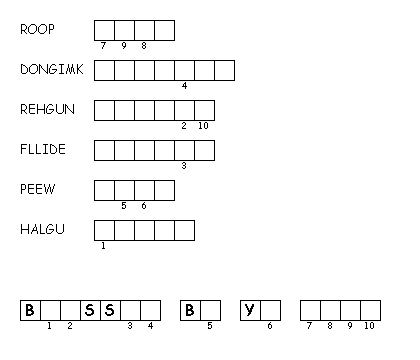

This Week:Jeremiah 17:5-10 Psalm 1 I Corinthians 15:12-20 Luke 6:17-26
Middle-School Pew-work
|
17 And he came down with them, and
stood in the plain, and the company of his disciples, and a great
multitude of people out of all Judaea and Jerusalem, and from the
sea coast of Tyre and Sidon, which came to hear him, and to be
healed of their diseases; |
19 And the whole multitude sought
to touch him: for there went virtue out of him, and healed them
all. |
22 Blessed are ye, when men shall
hate you, and when they shall separate you from their company,
and shall reproach you, and cast out your name as evil, for the
Son of man's sake. |
What role
and responsibility do we have in bringing God’s blessing to the
poor?
______________________
_______________________________________________________________________________________
_______________________________________________________________________________________
_______________________________________________________________________________________
_______________________________________________________________________________________
|
|
||
|
 |
||
Created by Puzzlemaker at DiscoverySchool.com
Next week: Exodus 34:29-35 Psalm 99 2 Corinthians 3:12-4:2 Luke 9:28-36, (37-43)